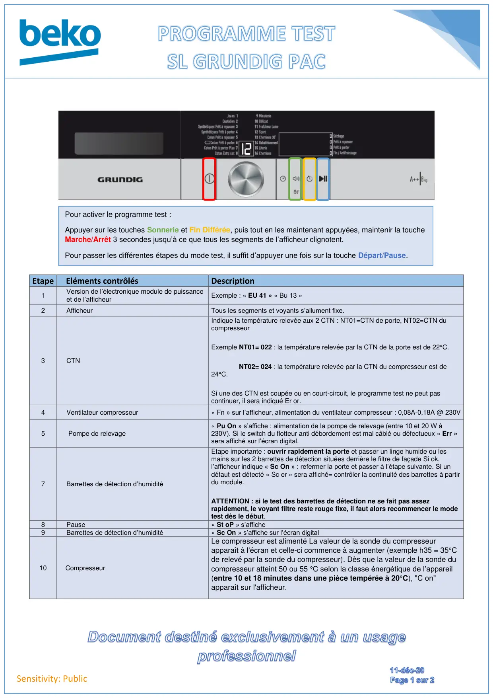
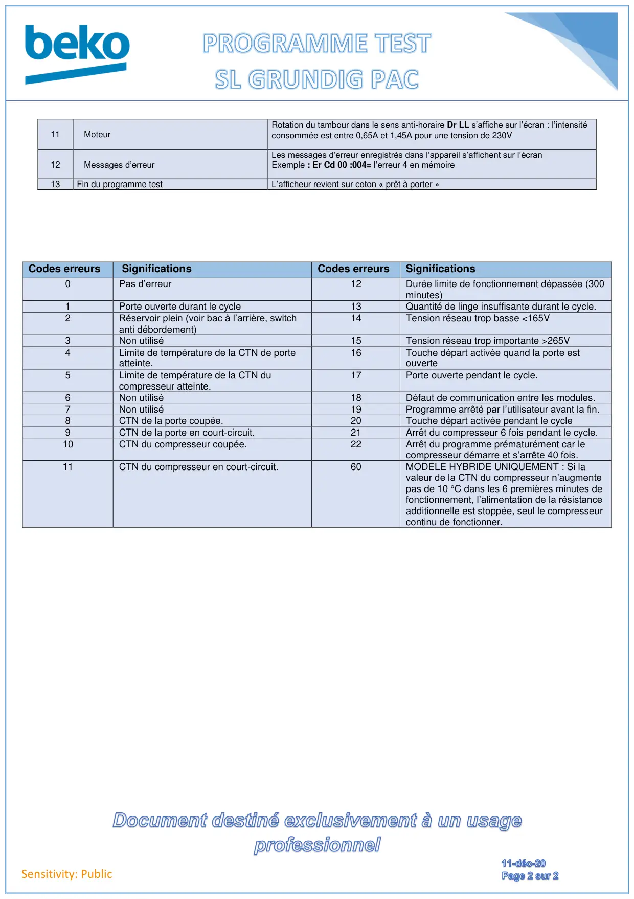

Prog Test seche linge PAC Grundig

Sensitivity: PublicEtape Eléments contrôlésDescription1Version de l’électronique module de puissanceet de l’afficheurExemple : « EU 41 » « Bu 13 »2AfficheurTous les segments et voyants s’allument fixe.3CTNIndique la température relevée aux 2 CTN : NT01=CTN de porte, NT02=CTN ducompresseurExemple NT01= 022 : la température relevée par la CTN de la porte est de 22°C.NT02= 024 : la température relevée par la CTN du compresseur est de24°C.Si une des CTN est coupée ou en court-circuit, le programme test ne peut pascontinuer, il sera indiqué Er or.4Ventilateur compresseur« Fn » sur l’afficheur, alimentation du ventilateur compresseur : 0,08A-0,18A @ 230V5Pompe de relevage« Pu On » s’affiche : alimentation de la pompe de relevage (entre 10 et 20 W à230V). Si le switch du flotteur anti débordement est mal câblé ou défectueux « Err »sera affiché sur l’écran digital.7Barrettes de détection d’humiditéEtape importante : ouvrir rapidement la porte et passer un linge humide ou lesmains sur les 2 barrettes de détection situées derrière le filtre de façade Si ok,l’afficheur indique « Sc On » : refermer la porte et passer à l’étape suivante. Si undéfaut est détecté « Sc er » sera affiché= contrôler la continuité des barrettes à partirdu module.ATTENTION : si le test des barrettes de détection ne se fait pas assezrapidement, le voyant filtre reste rouge fixe, il faut alors recommencer le modetest dès le début.8Pause« St oP » s’affiche9Barrettes de détection d’humidité« Sc On » s’affiche sur l’écran digital10CompresseurLe compresseur est alimenté La valeur de la sonde du compresseurapparaît à l'écran et celle-ci commence à augmenter (exemple h35 = 35°Cde relevé par la sonde du compresseur). Dès que la valeur de la sonde ducompresseur atteint 50 ou 55 °C selon la classe énergétique de l’appareil(entre 10 et 18 minutes dans une pièce tempérée à 20°C), "C on"apparaît sur l'afficheur.Pour activer le programme test :Appuyer sur les touches Sonnerie et Fin Différée, puis tout en les maintenant appuyées, maintenir la toucheMarche/Arrêt 3 secondes jusqu’à ce que tous les segments de l’afficheur clignotent.Pour passer les différentes étapes du mode test, il suffit d’appuyer une fois sur la touche Départ/Pause.
1 / 2
Sensitivity: PublicCodes erreursSignificationsCodes erreursSignifications0Pas d’erreur12Durée limite de fonctionnement dépassée (300minutes)1Porte ouverte durant le cycle13Quantité de linge insuffisante durant le cycle.2Réservoir plein (voir bac à l’arrière, switchanti débordement)14Tension réseau trop basse <165V3Non utilisé15Tension réseau trop importante >265V4Limite de température de la CTN de porteatteinte.16Touche départ activée quand la porte estouverte5Limite de température de la CTN ducompresseur atteinte.17Porte ouverte pendant le cycle.6Non utilisé18Défaut de communication entre les modules.7Non utilisé19Programme arrêté par l’utilisateur avant la fin.8CTN de la porte coupée.20Touche départ activée pendant le cycle9CTN de la porte en court-circuit.21Arrêt du compresseur 6 fois pendant le cycle.10CTN du compresseur coupée.22Arrêt du programme prématurément car lecompresseur démarre et s’arrête 40 fois.11CTN du compresseur en court-circuit.60MODELE HYBRIDE UNIQUEMENT : Si lavaleur de la CTN du compresseur n’augmentepas de 10 °C dans les 6 premières minutes defonctionnement, l’alimentation de la résistanceadditionnelle est stoppée, seul le compresseurcontinu de fonctionner.11MoteurRotation du tambour dans le sens anti-horaire Dr LL s’affiche sur l’écran : l’intensitéconsommée est entre 0,65A et 1,45A pour une tension de 230V12Messages d’erreurLes messages d’erreur enregistrés dans l’appareil s’affichent sur l’écranExemple : Er Cd 00 :004= l’erreur 4 en mémoire13Fin du programme testL’afficheur revient sur coton « prêt à porter »
2 / 2